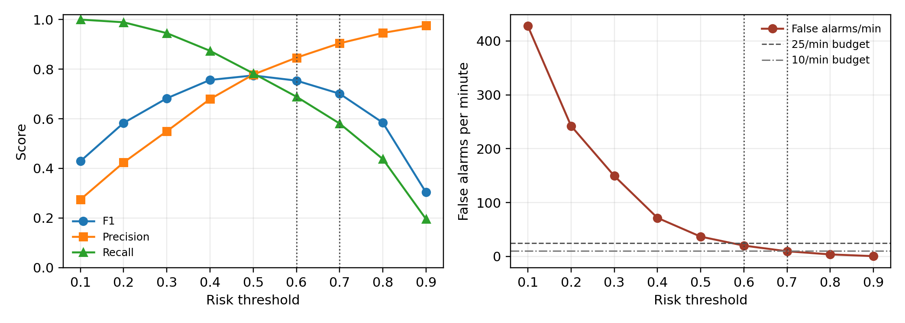
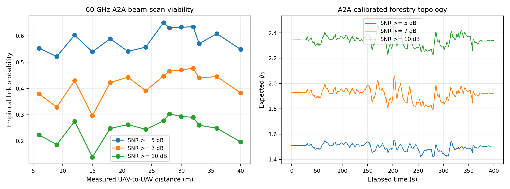
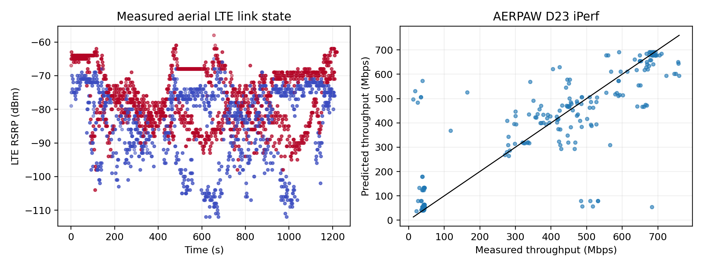

432,000 snapshots
Kinetic-TopoGuard mean absolute beta0 error
Mean per-snapshot inference
Nine PyTorch neural models, no surrogate backend
Operating Point
Risk threshold: 0.6
F1: 0.754 Precision: 0.846 Recall: 0.689
False alarms/min: 20.2 Alarm reduction: 45.1%

Measured RF Validation
| Evidence | Metric | Value |
|---|---|---|
| UAV-to-UAV 60 GHz hold-out | F1 | 0.923 |
| UAV-to-UAV 60 GHz hold-out | PR-AUC | 0.985 |
| AERPAW D22 LTE | F1 | 0.961 |
| AERPAW D23 LTE | F1 | 0.980 |
| AERPAW iPerf throughput | MAE | 75.2 Mbps |
External Transfer
| Check | Value |
|---|---|
| Forestry median radius | 9.61 m |
| Forestry beta0 MAE | 0.219 |
| Forestry fragmentation F1 | 0.697 |
| A2A-calibrated expected beta0 at 7 dB | 1.915 |
| Readiness audit | PASS (47 pass, 0 fail) |
UAV-to-UAV Channel Integration

AERPAW Cellular Validation
